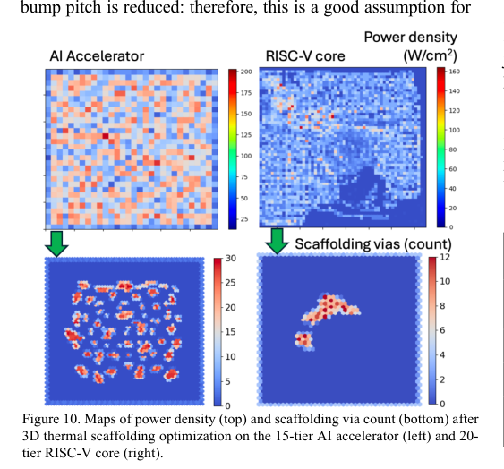

本报告由大模型自动生成，可能存在理解、归纳或数据转述错误；请以原论文为准。 Efficient Ultra-Dense 3D IC Power Delivery and Cooling Using 3D Thermal ScaffoldingD. Rich, Tathagata Srimani, Mohamadali Malakoutian, Srabanti Chowdhury, Subhasish Mitra · Proceedings of the 43rd IEEE/ACM International Conference on Computer-Aided Design · 2024 · 原文 · PDF 报告模型：gemini-3.1-pro-preview / high 本文详细解析了发表于2024年（根据PDF版权信息，假定当前时间2026年回顾该文献）的论文《Efficient Ultra-Dense 3D IC Power Delivery and Cooling Using 3D Thermal Scaffolding》。该文主要探讨了在极其紧凑的三维集成电路中，如何通过物理设计（EDA）算法优化散热与供电网络，从而在极小的芯片面积代价下突破热阻与电压降的瓶颈。 以下是按论文逻辑结构的详细解读。 建立背景与系统全貌（背景补充与预定义）在深入论文之前，需要先建立本文讨论的系统模型和几个核心贯穿概念：
在本文的系统架构中，数据流和控制流发生在逻辑器件之间，而本文重点关注的是物理层面的热流和电流分布。架构侧（如AI加速器或RISC-V核心）运行特定工作负载产生的功耗分布矩阵，被作为激励源输入到EDA热力学和电学仿真工具中；而EDA工具算出的最高温度和最大电压降，则作为约束条件反过来决定架构能够堆叠多少层。 一、引言与动机 (Introduction and Motivation)问题背景： 超高密度3D IC能够为数据密集型应用（如AI加速）带来巨大的吞吐量收益。然而，当把多个高功耗的计算层堆叠在一起时，系统面临严峻的热挑战。现有的先进散热器不足以解决问题，因为热量被困在由超低电介质组成的层间结构中，形成了极大的热阻。如果在125°C的峰值温度约束下，使用现有最好的散热器最多只能堆叠3个高功耗计算层（），严重限制了3D IC的潜力。 作者怎么做： 为了打破这个瓶颈，本文采用并优化了近期提出的一种叫作“3D热支架（3D Thermal Scaffolding）”的冷却技术。作者的核心贡献是提出了一种新的物理设计（EDA阶段）算法。相比于前人盲目放置热支架导致芯片面积增加10%的做法，该算法在同时满足峰值温度（）和最坏情况IR降（）约束的前提下，将面积惩罚降低到了5.5%，实现了80%的改进（面积增加量从10%降至5.5%），并在12层堆叠的7nm AI加速器上进行了验证。 二、背景 (Background)本节解释了供电网络（PDN）与3D热支架协同设计的原理。 供电网络如何与热支架结合： 芯片内的供电网络主要由水平电源网格（每一层顶部的金属线）组成。在本文的设计中，这些水平电源网格被热电介质（多晶金刚石）包围，并通过垂直的支架过孔相互连接。这种结构不仅负责输送电能，还同时作为热传导路径。 为什么传统方法行不通（硬件与设计约束）： 过去在硅通孔（TSV）3D IC中有类似的研究，但TSV尺寸太大，密度低。在超高密度3D IC中，如果只是简单地通过算法在空白区域（dummy fill）随机插入大量微小的过孔来散热，会带来严重的问题。因为芯片内部的布线资源（Routing tracks）是有限的，大量插入过孔会阻挡信号线的连接，导致布线工具无法完成工作，引发极高的布线拥塞（Routing congestion）。如果要缓解拥塞，就不得不强行拉大芯片的物理面积（Die area），这就是前人工作导致78%甚至10%面积激增的原因。 三、3D热支架的设计权衡 (3D Thermal Scaffolding Design Considerations)在提出优化算法前，作者通过仿真揭示了热支架设计中的三个关键权衡关系（这也是后续算法设计的依据）。
四、支架优化框架 (Scaffolding Optimization Framework)这是本文的核心方法部分，即如何在EDA工具中实现自动化布局。 作者构建了一个启发式贪心优化算法。算法的目标是最小化芯片裸片面积（Die area），约束是满足峰值温度和最坏情况PDN电压降限制。算法被拆分为两个阶段以处理复杂的搜索空间。 阶段1：外围过孔环与热电介质优化设计初始化时，芯片边缘包含一个最窄的过孔环。算法在每次迭代中必须从以下三个操作中选择一个： (1) 将某一BEOL金属层的传统电介质替换为热电介质。 (2) 在核心区外部加宽支架过孔环。 (3) 在核心区内部添加一个过孔，并由此进入阶段2。 如何选择这三者？作者定义了一个代价函数（Cost Function），每次选择使该代价最小的步骤：
该公式背后的逻辑是：寻找以最小的面积代价换取最大幅度的综合电/热性能改善的方案。 阶段2：核心区域支架过孔优化当阶段1发现只能通过在核心区加过孔才能继续优化时，进入阶段2。此时，BEOL层的电介质材料已经固定不变，算法开始在核心区内部逐个放置过孔。 假设要在坐标 放置下一个过孔，算法会计算芯片上每个离散位置的总和：
算法会挑选使该总和最大化的位置 放置下一个过孔。其中 为标量，代表坐标位置，单位原文未说明，下标 原文未单独定义。这利用了本文第三节证实的“过孔具有极强局部效应”的物理特性。 架构—EDA跨层联系与仿真近似在验证方法时，作者将一个16×16阵列的AI加速器和一个RISC-V核心的架构设计通过Synopsys Design Compiler综合为物理网表，跑特定工作负载（如矩阵乘法），提取出部分开关活动率（受限于仿真时间，选取1000个时钟周期），进而转化为功耗密度图（如AI加速器为95 W/cm²，RISC-V为29 W/cm²）。 这些从微架构提取的功耗分布作为输入，传递给热仿真器PACT和压降仿真器Voltus。 关键设计妥协：如果在每次贪心迭代中都运行完整的EDA布局布线，耗时将长达数小时。因此作者在算法循环中做了一个仿真近似（Pessimistic approximation）：在热仿真中直接通过按比例增加局部的热导率参数来模拟过孔的影响，在电仿真中仅在顶层（M9）加入一个新的电接触点来模拟过孔（悲观近似，因为真实的过孔会接触到M1），而跳过了真实的全局连线更新。这是一种典型的为了换取算法速度而牺牲少许精度的工程权衡。 五、实验结果 (Results)作者在7nm工艺节点下验证了该框架（图10）。  主要性能指标（表1）： 设置约束为：峰值温升 （ 为标量，代表超过环境温度的峰值温度增加量，单位 ，下标 peak 原文未单独定义。假设外部散热器环境为100°C水沸腾，加起来刚好满足125°C的绝对物理上限）；最坏情况IR降 （作者选择只分配总容许电压降的25%给芯片上网络，剩下75%留给封装及外部稳压器，这是设计者的选择）。
进一步的结论支持：
六、结论与未来工作 (Conclusion and Future Work)主线总结： 本文从超高密度3D IC面临的严重散热和供电瓶颈出发，指出传统仅仅依靠增加通孔（导致布线面积急剧膨胀）的不可行性。由此引出了引入新型材料（多晶金刚石）的必要性，并揭示了它在导热和提供去耦电容上的双重优势。接着，作者将这种材料特性与物理设计权衡（边缘环不影响拥塞 vs. 核心区直击热点）转化为一个两阶段的贪心成本优化算法。最终，该算法成功在控制面积开销（仅5.5%）的严苛条件下，保障了15层高功耗芯片的热学和电学安全。 关键假设与局限性：
|